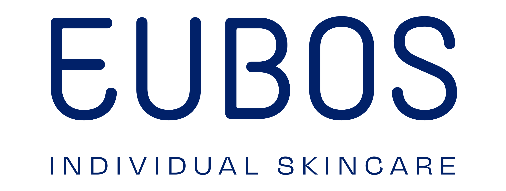
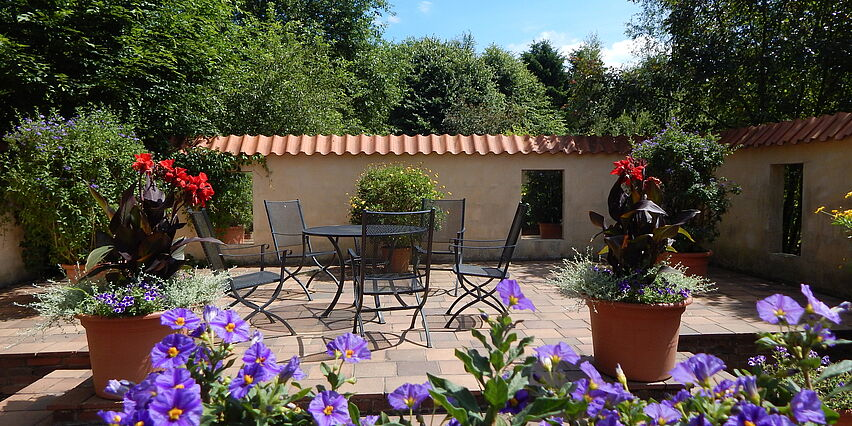

Ihre Haut.
Unsere Aufmerksamkeit.
Die passende Pflege ist so individuell wie Sie. Entdecken Sie unsere Beratung und die auf der offiziellen Website genannten Pflegemarken.
MOIN, WIESMOOR.
Und wir sind an Ihrer Seite.
In Ihrer Sonnen-Apotheke geht es um Sie. Um Ihre Fragen, Ihren Alltag und das gute Gefühl, persönlich beraten zu sein.
Inhaberin der Sonnen-Apotheke
CHRISTIANE PANNETT & IHR APOTHEKENTEAM
Manche Fragen lassen sich am besten von Mensch zu Mensch klären. Mit Ruhe, einem offenen Ohr und einer verständlichen Antwort.
Christiane Pannett und ihr Apothekenteam sind Ihre Anlaufstelle in der Hauptstraße 159. Ob Sie in Wiesmoor zu Hause sind oder gerade zu Besuch: Ein einfaches Moin ist ein guter Anfang.
Persönlich anrufen: 04944 2550 Und wenn Sie mögen, auch auf Platt.EIN GUTES GEFÜHL. AUCH ONLINE.
Von der Hausapotheke bis zu Mikronährstoffen. In Ruhe entdecken und den Demo-Einkauf ausprobieren.
Lieber persönlich beraten lassenEin echter Einblick. Ein Demo-Einkauf. Artikel aus dem offiziellen Sonnen-Sortiment plus Nomosan als Demo-Erweiterung. Angezeigte Beträge sind Musterpreise aus datierten Quellen, keine aktuellen Preis- oder Verfügbarkeitszusagen. Keine Zahlung oder Übermittlung an die Apotheke.
GUT BERATEN. PERSÖNLICH BEGLEITET.
Gesundheit ist persönlich. Deshalb gehören ein offenes Ohr und Zeit für Ihre Fragen für uns zum guten Gespräch.
Die passende Pflege ist so individuell wie Sie. Entdecken Sie unsere Beratung und die auf der offiziellen Website genannten Pflegemarken.
Blutdruckmessung, Kompressionsversorgung oder eine individuell hergestellte Rezeptur: Sprechen Sie uns auf Ihr Anliegen an.
Anrufen & besprechenRezept vorbestellen und später abholen: Die Sonnen-Apotheke bietet diesen Service bereits auf ihrer offiziellen Website.

UNSER WIESMOOR
Wenn aus einzelnen Blüten etwas Großes wird, dann ist das typisch Wiesmoor.
Seit 1952 gehört das Blütenfest zur Blumenstadt. Menschen gestalten gemeinsam die farbenfrohen Korsowagen – mit Geduld, Handarbeit und ganz viel Herz.
Dieses Gefühl inspiriert unseren Entwurf: regional verwurzelt, offen für Neues und nah an den Menschen.
Wiesmoors Blütenfest entdecken Regionales Motiv, keine behauptete Veranstaltungs- oder Sponsoringpartnerschaft.DAS IST UNSER ZUHAUSE.
Ein Spaziergang im Gartenpark. Das gemeinsame Blumenstecken. Ein Wiedersehen beim Blütenfest. Es sind die Menschen, die unsere Blumenstadt ausmachen.
Beim Blumenstecken wird aus vielen kleinen Handgriffen ein gemeinsames Fest.

Der Gartenpark gehört zu den Orten, an denen Wiesmoor seine ruhige Seite zeigt.
Unsere Blumenstadt gibt diesem Entwurf seine Farben und sein besonderes Gefühl.
Originalaufnahmen: Wiesmoor Touristik. Mehr aus unserer Blumenstadt entdecken
WIR SIND GANZ IN DER NÄHE.
Online entdecken. Persönlich wiedersehen.
Wir freuen uns auf Ihren Besuch in Wiesmoor.
ZEIT FÜR SIE
Zeiten laut offizieller Website, Stand 22.10.2026. Für das Wochenende sind dort keine Zeiten angegeben.
Notdienst-Apotheke findenHauptstraße 159
Karte öffnen Externe Karte bei Google MapsGANZ EINFACH.
Sie müssen kein Online-Profi sein.
Ein Anruf ist genauso willkommen.
Ja. Unter 04944 2550 erreichen Sie die Sonnen-Apotheke persönlich. Besprechen Sie Ihr Anliegen direkt mit der Apotheke oder kommen Sie während der Öffnungszeiten vorbei.
Sie können Produkte auswählen, die Menge ändern und die Abholung durchspielen. Es wird nichts bestellt, bezahlt oder an die Apotheke gesendet. Für eine echte Vorbestellung nutzen Sie bitte die offizielle Website oder rufen Sie an.
Für diesen Demo-Shop brauchen Sie kein Konto. Sie können sich alles in Ruhe ansehen. Wenn Sie lieber persönlich sprechen möchten, finden Sie die Apotheke in der Hauptstraße 159 in Wiesmoor.